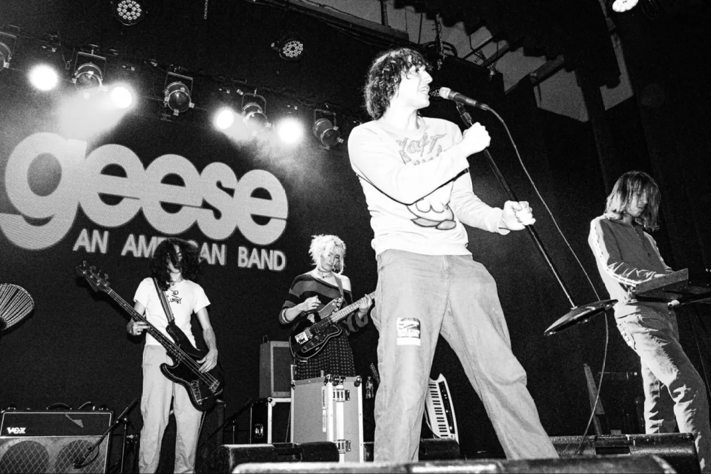
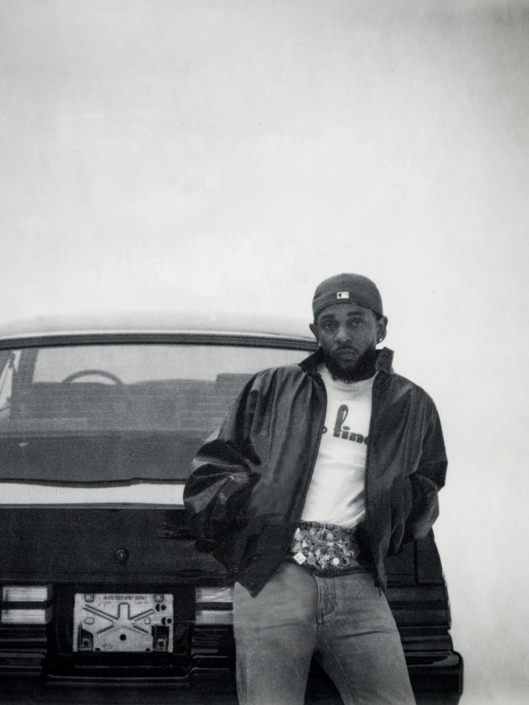

ЖАНРИ СУЧАСНОЇ МУЗИКИ
Музичний жанр – це як позначення певного типу музики зі специфічними рисами. Жанри допомагають упорядкувати музику на основі таких речей, як стиль, використані інструменти та культурні впливи.
Прикладами поширених жанрів є рок, поп, хіп-хоп, джаз, класична та електронна танцювальна музика. Жанри можуть змінюватися та змішуватися з часом, оскільки змінюються музичні стилі та вподобання.
Спосіб, яким ми класифікуємо музику, різниться, і іноді жанри можуть змішуватися.
Артисти
Рок-музика у 2026 році переживає справжній ренесанс, і гурт Geese стоїть на передовій цієї хвилі. Їх називають "першим великим рок-гуртом покоління Z". Вони відмовилися від старих кліше та змішали гаражний панк із арт-роком, створивши звук, який водночас здається знайомим і абсолютно футуристичним. Якщо ви шукаєте сиру енергію, складні гітарні партії та харизму, яка змушує стадіони здригатися — Geese це саме той ковток свіжого повітря, якого потребував жанр.

Кендрік Ламар залишається непохитним титаном індустрії навіть у 2026-му. Його вплив вийшов далеко за межі музичних чартів — це культурний феномен. Кожен його новий реліз — це не просто набір треків, а глибоке філософське висловлювання, загорнуте в ідеальний флоу та інноваційний продакшн. Кендрік продовжує доводити, що реп може бути одночасно складним інтелектуальним мистецтвом і головним хітом на будь-якій вечірці, залишаючи конкурентів далеко позаду у питаннях лірики та сенсів.

Якщо 2026 рік має обличчя, то це обличчя Сабріни Карпентер. Вона остаточно закріпила за собою статус головної "it-girl" світової поп-сцени. Її музика — це ідеальне поєднання іронічних текстів, вінтажної естетики та неймовірно привязливих мелодій. Сабріна майстерно грає з образами, створюючи хіти, які миттєво стають віральними. Це "розумний" поп: легкий за звучанням, але наповнений гострим гумором та щирістю, що змушує мільйони фанатів відчувати себе частиною її яскравого світу.